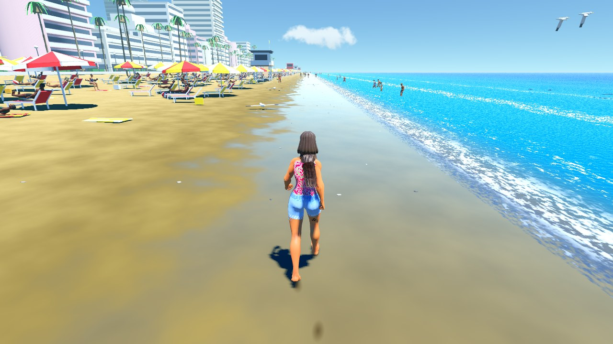
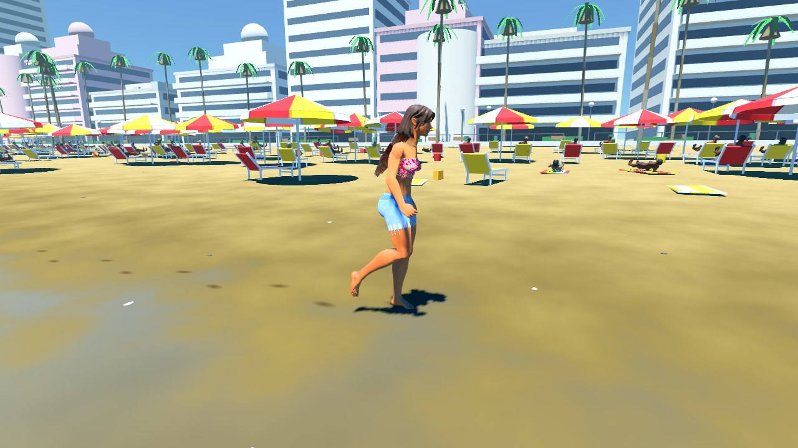

Beach · clear tropical noon
What the director asked each model for
ground3BBeach sand: golden, smooth packed sand, wide wet band with a strong mirror sheet, shells and pebbles along the tide line.
props7BBeach furniture, normal density: loungers with some towels, umbrellas on most loungers, some clutter (buckets, coolers, balls, bags); white frames with red and yellow fabrics, striped umbrellas.
sky3BA cloudless tropical noon sky with the sun almost overhead and slightly to the right over the sea. Deep blue overhead fades to a bright turquoise band near the water, with a thin haze softening the horizon.
vegetation3BResort planting vegetation on the beach: normal density, tall fan palms only, mature plants, some hedges.